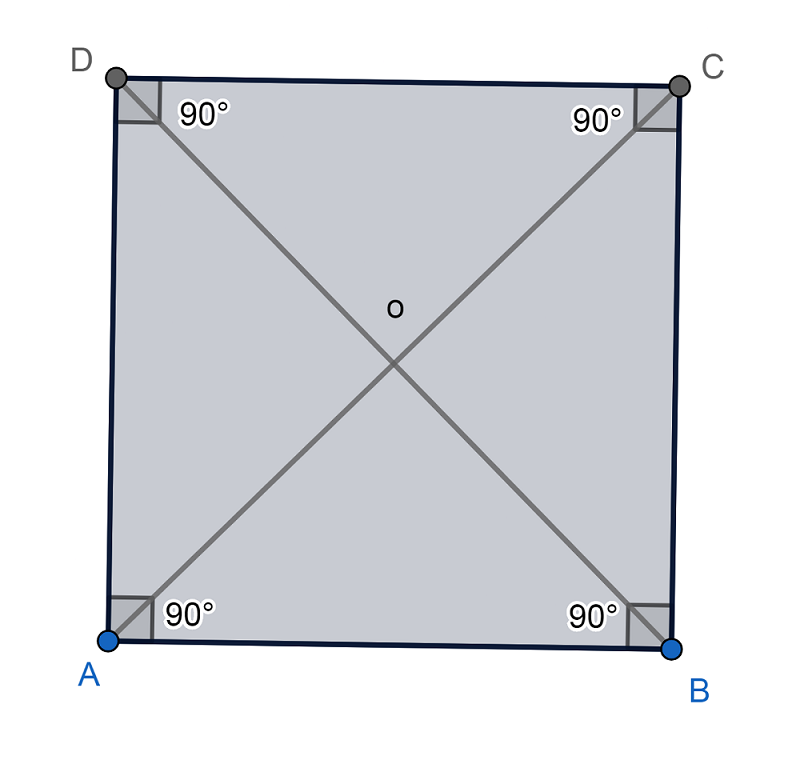

El espacio bidimensional es un módulo geométrico de la proyección plana. Donde solo tienen dos dimensiones, es decir que cuenta con ancho y largo, pero no con profundidad (que solo se utiliza en la tridimensionalidad). Los planos son bidimensionales, y solo pueden contener cuerpos unidimensionales o bidimensionales.
Cuando nos referenciamos el término figuras bidimensional se hace alusión a las figuras que solo están compuestas por dos dimensiones: ancho y largo.
Las figuras bidimensionales tienen altura y anchura, pero no profundidad.
Como ejemplo claro de figuras bidimensional, podemos señalar a figuras básicas como:
Son formas que cuando se trazan no involucran ningún tipo de volumen en su diseño.
| Número | Figura | Fórmulas | |
|---|---|---|---|
| Perimetro | Volumen | ||
| 1 | L + L + L | b x h / 2 | |
| 2 |  | 4L | L 2 |
| 3 | 2a + 2b | b x a | |
Puedes visitar esta página web, donde puedes aprender de las figuras geometricas bidimensionales. Dando click Aquí